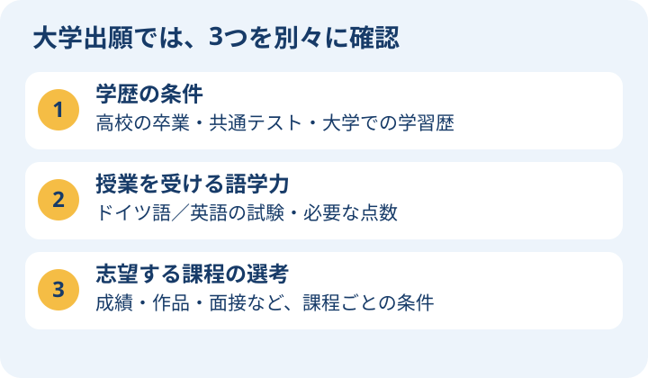

高校から進むのは、まず「学部」の課程
学士課程（Bachelor）は日本の大学の学部に相当します。修士課程（Master）は、学部を卒業した後に専門を深める大学院の課程です。まず学びたい分野を決め、その分野の学部課程と授業言語を探しましょう。
高校生へ：日本の高校の卒業だけで出願できるとは限らないので、共通テストの受験科目を決める段階で条件を調べます。保護者の方へ：語学試験、出願書類、費用、住まいの準備も必要です。大学名やランキングだけで進学先を決めず、実際の課程の条件を確認してください。

学歴上の資格と語学条件を分ける
ドイツの大学への出願では、学歴上の入学申請資格（HZB）、授業を受けるための語学力、課程ごとの選考条件をそれぞれ確認します。語学試験に合格すれば、学歴条件も満たせるという仕組みではありません。
日本の高校から学士課程へ
日本の高校卒業だけで、すべてのドイツの学士課程に直接出願できるわけではありません。DAAD日本の案内では、高校卒業と大学入学共通テストの所定の科目・得点を組み合わせるルートや、日本の大学での履修歴を使うルートなどが示されています。IBなどは別の基準です。
共通テストを使うルートでは、受験年度に対応する科目表、合計点、志望分野に関係する科目の条件を確認します。「共通一次」は過去の試験名で、現在の案内は大学入学共通テストです。条件を満たしても合格が保証されるわけではありません。
Studienkolleg（準備課程）を経る場合も、入学資格・ドイツ語・入学試験の条件があります。「日本の高校を卒業すれば必ず準備課程に入れる」とは考えず、志望大学に自分の学歴を確認してください。
日本の大学から修士課程へ
中心になるのは、認められる学士号、専攻との関連、履修科目・単位数、成績、語学証明です。高校卒業者向けの共通テストのルートを、そのまま修士出願に当てはめるものではありません。
英語で完結する修士課程もありますが、すべての修士が英語だけで入学できるわけではありません。英語課程でもドイツ語を求める場合があります。TOEFL・IELTS等の種類、点数、有効期限、免除条件を課程ごとに確認してください。
企業で働きながら学ぶデュアル課程
Duales Studiumは大学での学習と企業等での実務を組み合わせる課程です。職業資格の取得も組み込むausbildungsintegrierend（職業訓練を組み込む型）と、実務経験を組み込むpraxisintegrierend（実務を組み込む型）などがあります。すべてが同じ仕組みではありません。
- 大学の入学資格に加え、提携企業の選考・契約が必要になることがあります。
- 報酬、授業料の負担、実務時間、休暇、契約終了時の条件を確認します。
- 英語で学べる課程でも企業での実務にはドイツ語が必要な場合があります。
- DHBWなどでも非EU学生の授業料が生じる場合があります。「働けば大学は全部無料」とは限りません。
大学の種類と選び方
- Universität：学術・研究を中心とした教育。
- HAW／Fachhochschule：応用・実践との結びつきを重視。
- 芸術・音楽大学：作品・実技等の選考を課す場合があります。
- 国公立・私立の違いだけでなく、学位の認定、課程の内容、実習先、修了条件を確認します。
学費：授業料と学期納付金
公立大学の多くでは通常の学位課程に一般的な授業料を課しませんが、例外があります。バーデン＝ヴュルテンベルク州の非EU学生向け授業料、TUMの非EU学生向け授業料、私立大学や継続教育課程などを個別に確認してください。
Semesterbeitrag（学期納付金）は授業料と別です。交通券等の内訳も大学・学期で変わります。授業料が0でも留学全体の費用が0になるわけではありません。
大学を比較する
- 課程名・学位・授業言語・開講学期・キャンパス
- 出願資格・語学・選考・締切・uni-assist/VPDの要否
- 授業料・学期納付金・奨学金・住居
- モジュールハンドブック・研究分野・実習・修了後の選択肢
高校生が今から進める4つの準備
- 分野と言語を選ぶ：たとえば情報系を学びたいなら、学部の授業内容とドイツ語・英語のどちらで学ぶかを調べます。
- 学歴の条件を確認する：DAAD日本の年度別の科目表と、志望大学の案内で、自分の共通テスト科目が条件に合うか確認します。
- 語学と書類の計画を作る：試験日、高校の卒業・成績証明書の発行、翻訳や認証の要否を確認します。
- 出願経路と締切を確認する：大学へ直接出すのか、uni-assistを使うのか、事前審査書類が必要かを課程ごとに調べます。
uni-assistは、参加大学向けに外国の学歴書類などを確認する組織です。VPD（事前審査書類）が必要な場合は、取得後に大学へ出願する手続きも必要です。VPDを受け取っただけでは大学への出願は完了しません。
大学の公式サイトで比較する項目
課程の授業一覧、必要な語学試験と点数、出願締切、授業料・学期納付金、住居を同じ表にまとめます。モジュールハンドブックは、科目ごとの学習内容や修了条件をまとめた資料です。自分の学びたい授業があるか確かめるのに役立ちます。
初めて読む人のための用語メモ
- HZB
- Hochschulzugangsberechtigungの略。大学へ出願するために必要な学歴上の資格です。語学力とは別に確認されます。
- Studienkolleg
- 大学入学準備課程。入学条件があり、誰でも必ず利用できるわけではありません。
- IB
- International Baccalaureate（国際バカロレア）。日本の高校卒業・共通テストのルートとは別の認定条件を確認します。
- TOEFL／IELTS
- 英語力を証明する試験の名前です。どの試験の何点が必要かは課程ごとに違います。
- デュアル課程
- 大学での勉強と企業などでの実務を組み合わせる課程。職業資格も取得する型と、実務経験を組み込む型があります。
- HAW／Fachhochschule
- 応用科学・実践を重視する大学の呼び方です。Universitätは学術・研究を中心とする大学です。
- DHBW／TUM
- DHBWはバーデン＝ヴュルテンベルク州のデュアル課程の大学、TUMはミュンヘン工科大学の略称です。
- EU／非EU
- EUは欧州連合。非EUはEU加盟国以外を指します。国籍などによって学費や手続きの扱いが変わります。
- Semesterbeitrag
- 学期ごとの納付金。学生支援などに使われる費用で、授業料とは別です。
- uni-assist／VPD
- uni-assistは外国の学歴書類などを審査する組織。VPDは一部の大学が求める事前審査書類で、合格通知ではありません。
情報源
確認日：2026年10月10日。出願年度・課程・国籍によって条件が異なります。申請前に公式案内を確認してください。